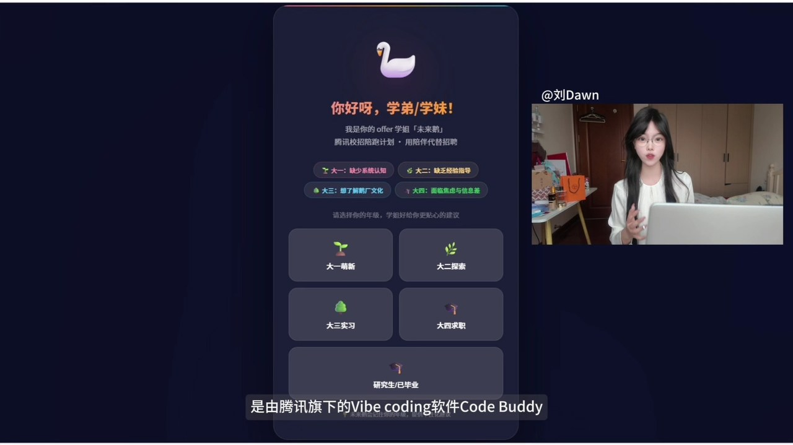
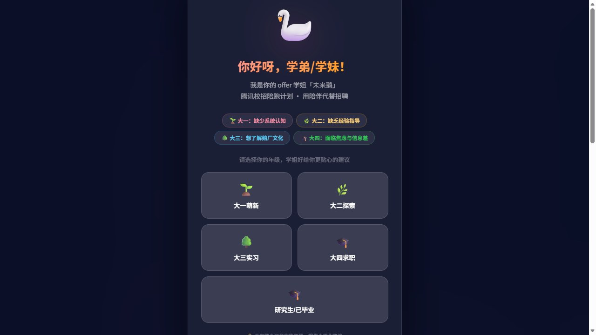
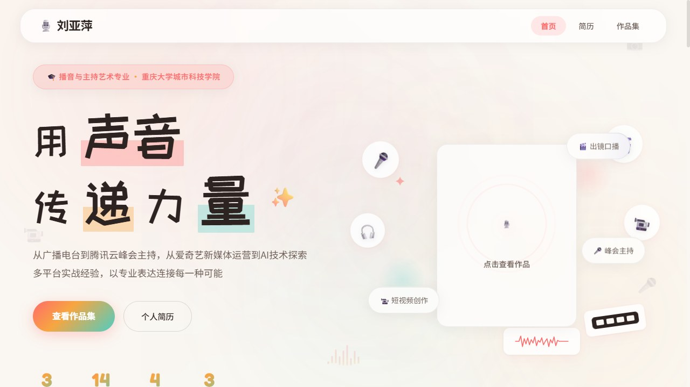
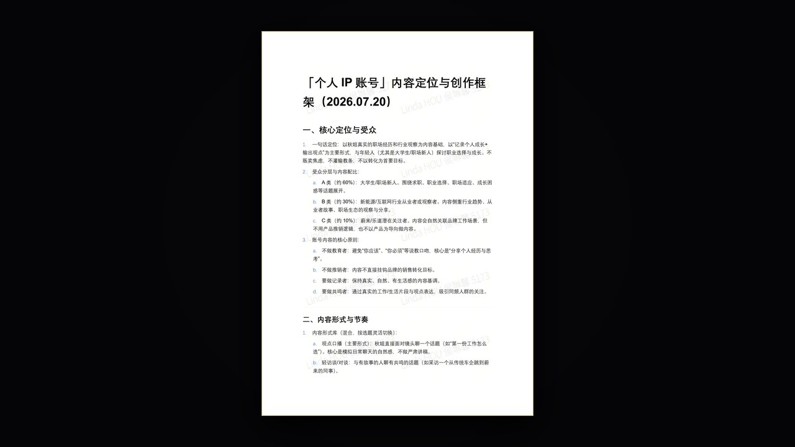

-

视频 · Video
「未来鹅」全流程开发讲解
零技术基础用 Vibecoding 从 0 到 1 开发 AI 陪伴产品的完整流程讲解。
-

网址 · Link
「未来鹅」在线 Demo
已部署至公网的可交互 Demo，可直接在线体验。
-

网址 · Link
个人 VibeCoding 作品集 1.0
零基础独立搭建的上一版个人网站：简历页与作品集页，公网可访问。
-

文档 · Doc
「个人 IP 账号」内容定位与创作框架
面向高管个人 IP 的账号定位、内容形式、视觉调性与选题框架，2026.07 版，共 6 页。